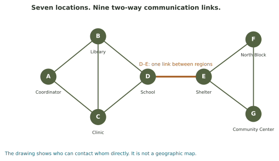

A workshop for connected communities
Change connections and compare what happens to travel through the network and the spread of information.
Begin with the county's emergency contacts
This explorer holds the seven-location alert network from the reading. Each line represents a two-way communication link. Begin by selecting A as the coordinator and G as the community center, then show a route between them.
Now remove D–E, the school-to-shelter connection. Predict which locations lose contact before checking the new component count. Later, compare the other network diagrams in the reading to see how the same mathematics describes different relationships.
Which locations can reach one another?

The experiment starts with the original connected network.
The highlighted links show the selected path. The spreading table lists when each node becomes active.
Read the neighbor and distance table
Try these changes
- In the original network, A-to-G takes 4 links. Remove D–E. Can you find any path now?
- Keep D–E removed and add D–F. Trace a surviving route to G. Did the number of components change?
- Restore the original network and add A–D instead. It increases density by the same amount. Does it protect the system when D–E fails?
The same connections can support different kinds of spread
Choose starting nodes and a spreading rule. Advance one round at a time; newly active nodes participate in the next round.
Why a message and a decision behave differently
Try automatic forwarding from A, then try the half-neighbor rule starting with B and C. In the first model, one informed neighbor is enough to pass on an alert. In the second, a node may wait until several neighbors are active.
The network is held fixed; the update rule changes. After this experiment, compare the five-student example in the reading to see a similar threshold calculation on a different graph.
What does it mean for a place to be central?
Compare direct contacts with how many links separate a location from the others. A site with many neighbors need not offer the most resilient route through the whole county.
A dash means some destinations cannot be reached.